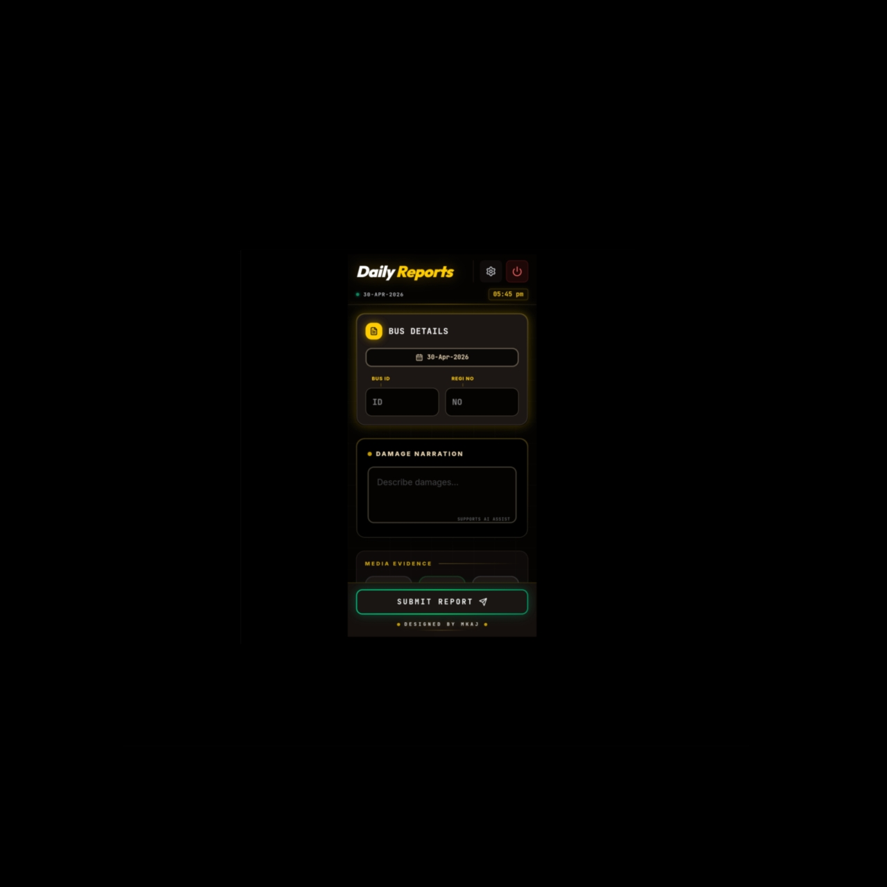

Daily Reports is a smart reporting interface designed to simplify the process of recording and managing daily bus-related information. The application provides a structured and user-friendly layout for capturing essential details such as bus ID, registration number, and damage reports.
The interface focuses on clarity and efficiency, allowing users to quickly input and review data without confusion. Features like categorized sections, clean form design, and guided input fields ensure smooth interaction, even for non-technical users.
Additionally, the system includes a damage narration section supported by AI assistance, making it easier to document issues accurately. The overall design emphasizes usability, accessibility, and modern UI principles.
Download App